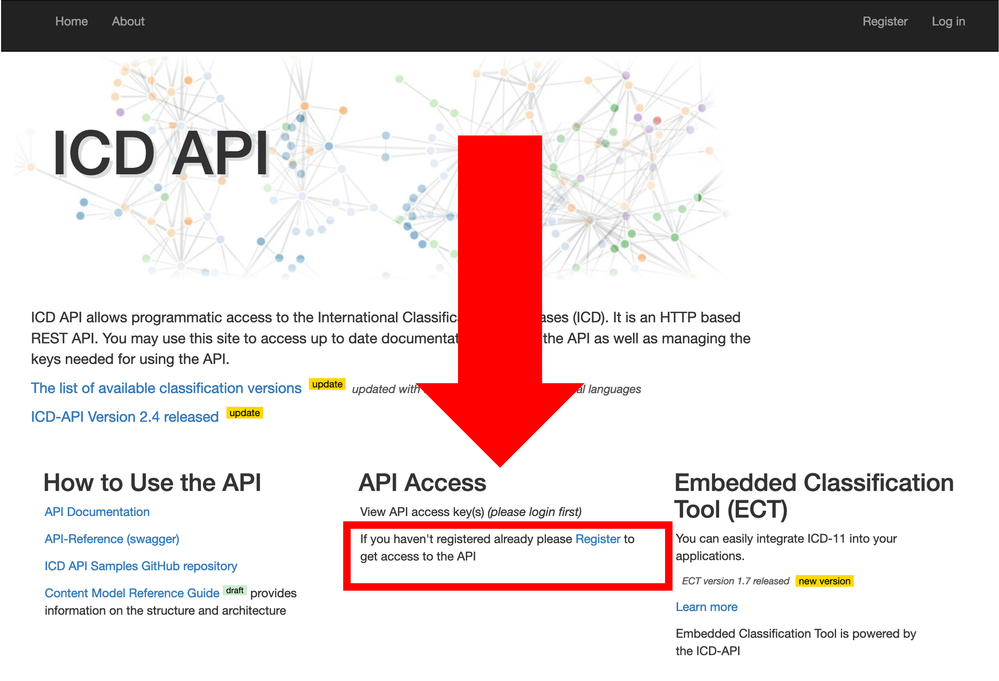

Generating your token
Generating-your-token.RmdTo be able to use the package you’ll need a CLIENT_ID
and CLIENT_SECRET from the WHO website. Follow these
instructions to obtain it:
- Go to the WHO ICD API website at https://icd.who.int/icdapi and
click on
Registerinside theAPI Accesssection:

Image of the ICD API website indicating where
the Register button for the API lies
- Fill out your information and verify your email.

Image of the API website with the register
form
- Once your email is verified go to the
Loginpage. Enter your email and password:

API login page requesting the user for email and
password
- Read and accept the terms and conditions for the API

Image of API website indicating where is the
button to accept terms and conditions
- Under API Access click on
View API access key(s)

Image of API website indicating where is the
button to View the API access keys
- Your client id and secret will be required by the
WHOicdlibrary. Copy them, they are the equivalent to a user and password for this API. You’ll need them to interact with the WHO ICD. Don’t share them!!

Image of API website indicating where is the
button to View the API access keys
- Now go back to R and use them!
library(WHOicd)
#Substitute for your ID and SECRET
token <- get_token(CLIENT_ID, CLIENT_SECRET)
#Check that they work by searching all ICD-10 releases
icd10_releases(token)
#> [1] "2019" "2016" "2010" "2008"